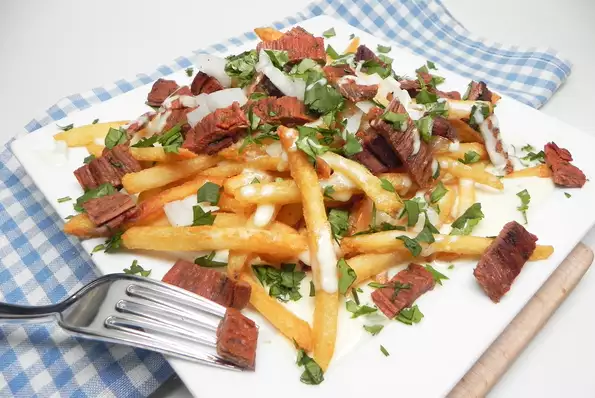

French fries topped with carne asada remincent of street tacos and somthered in warm queso. Loaded fries don't get mcuh better than this. Dont't forget your favorite hot sauce to dip the fries in or smother them.
Place steak, beer, and sazon seasoning in a gallon-sized resealable bag. Refrigerate for 8 hours, or overnight.
Preheat the oven to 450 degrees F (230 degrees C). Spread French fries evenly on a baking sheet
Preheat an outdoor grill for medium-high heat and lightly oil the grate. Cook steak for 5 minutes, flipping halfway through. Transfer to a plate and let rest for 10 minutes.
Bake fries in the preheated oven until light golden in color, 11 to 15 minutes. Divide among 4 serving plates and drizzle queso over the top.
Slice steak across the grain into bite-sized pieces and scatter over the fries. Garnish with onion and cilantro.